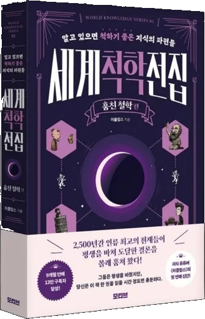

←
죽음을 앞둔 선택
STAGE 1
1/4
STAGE 1
상황 제목
상황 설명
당신의 선택
선택 내용
당신의 죽음관
결과 타입
결과 설명

세계척학전집 08 · 신간
죽음 리허설
살기 위해, 한 번 죽어 보기. 죽음을 끝까지 파고든 25명의 사유.
이 시뮬레이터에 등장한 소크라테스, 플라톤, 에피쿠로스,
니체, 하이데거, 카뮈, 사르트르의 철학을 더 깊이 알고 싶다면
니체, 하이데거, 카뮈, 사르트르의 철학을 더 깊이 알고 싶다면

세계척학전집 - 훔친 철학 편